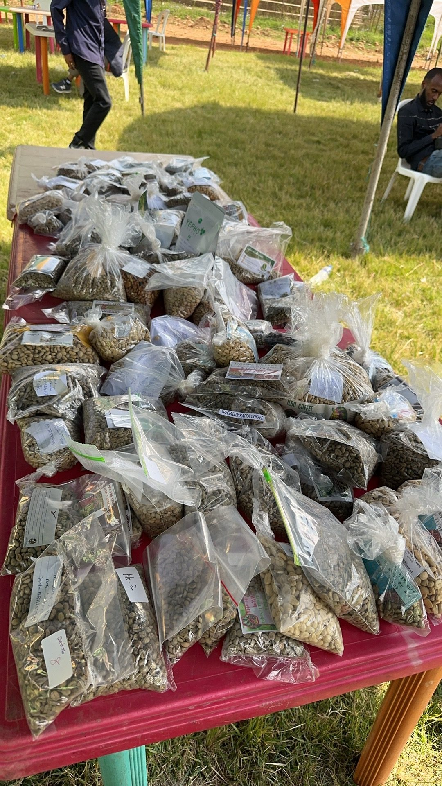
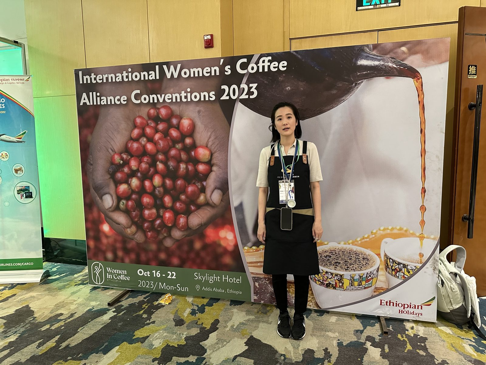
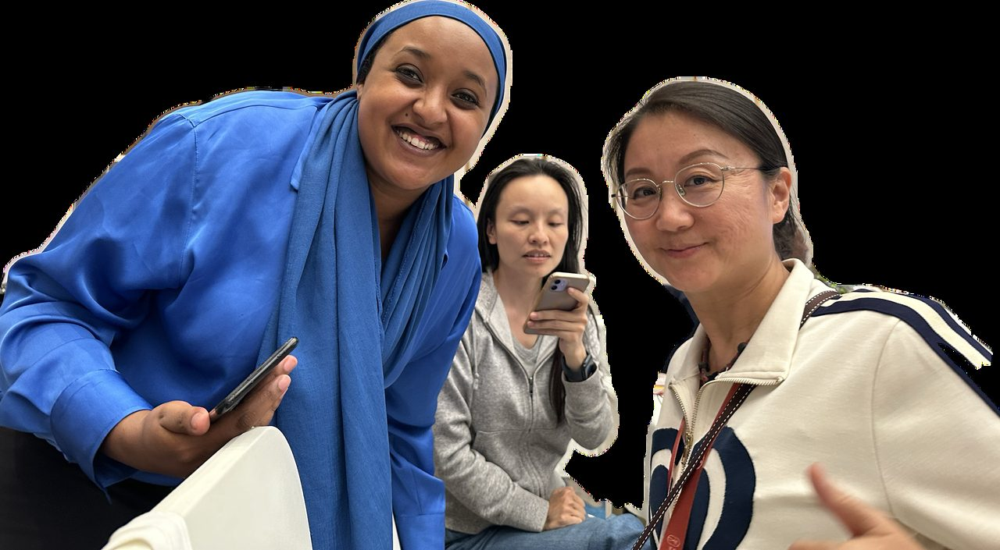

2023 年成立于上海。我们把杯测师的判断和仪器的测量放在同一批样品上，让"好"变成可以比较的数据，再让数据回到交易里。
右图：2024 昆山 COFAIR，巴西、印尼、埃塞各选三支样品，人评审与 AI 各排一次。巴西、印尼名次一致；埃塞前两名一致，相差 0.9 分。
受训杯测师逐支打分，按 CQI / SCA 体系记录风味与缺陷。
同一批样品由合作方仪器扫描，得到可复算的读数。
人和仪器用共享样品互相校验，差异本身作为数据保留。
两套结果合成一个判断，写进买家看得懂的报告。
判断随咖啡进入真实交易，每一单留下可回溯的记录。
| 产地 | 人评审 | AI 测量 | 结果 |
|---|---|---|---|
| 巴西 | 三支排序 | 三支排序 | 名次一致 |
| 印尼 | 三支排序 | 三支排序 | 名次一致 |
| 埃塞 | 前二排序 | 前二排序 | 相差 0.9 分 |
2024 年昆山咖啡展，三个产地各三支样品，人评审与 AI 各自独立排序。这是方法第一次在公开场合被并排检验。
2023 年 10 月，受 IWCA 埃塞分会邀请，我们第一次把样品铺在亚的斯亚贝巴的桌上。方法不是从会议室里想出来的，是从这批样品开始的。



云南产区，按批次取样
受训杯测师打分
仪器读数与画像
人机对照出报告
随货进入真实交易
买家反馈回写下一批
每一批都留下记录：产地、批次、感官分、扫描数据、买家反馈。缺少任何一项，这批就不算完成。
方法设计成可以跑在不同仪器上，结果因此可以跨设备比较。我们不卖仪器，也不绑定任何一家。
检测与报告、感官培训、贸易匹配，三类需求走同一个入口。